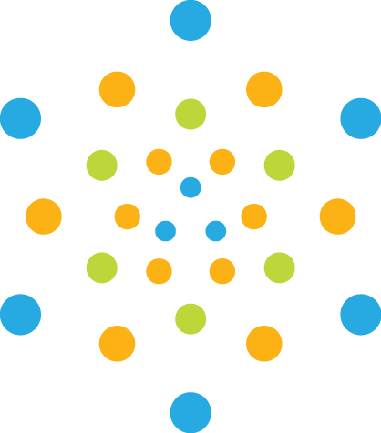

<ion-content class="login-bg">
  <h1 class="loading">
    
  </h1>
  <h2 class="heading">
    
  </h2>
  <ion-buttons class="login-page">
    <button id="loginPop" class="log-icon" (click)="openModal()" [hidden]>
      
    </button>
  </ion-buttons>
</ion-content>
